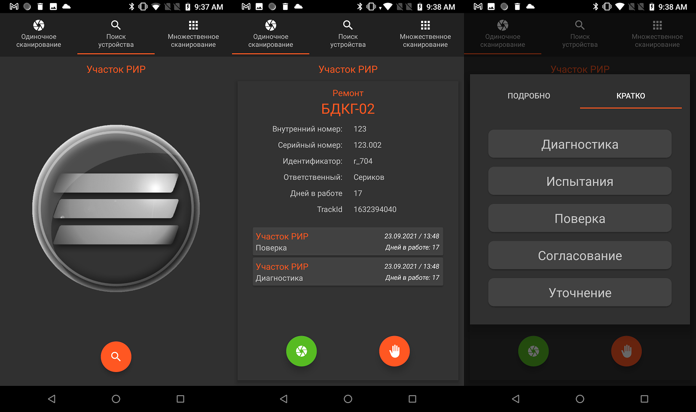

AdjustmentDB и AdjustmentWeb
Комплекс приложений для отслеживания устройств. Основная идея: имеем базу данных, в которую сохраняем имя и серийный номер устройства, для каждого устройства можно сохранить его статус ("На регулировке", "На линейке" и т.д.) таким образом в любой момент времени можно будет отследить устройство по егу типу и/или статусу, например узнать, сколько AT2503 (и с каким номером) находятся на линейке или на каком этапе находится поступивший в ремонт прибор. При этом добавление устройства в базу данных происходит в полуавтоматическом режиме -- используя специальное приложение путем сканирования QR-кода, расположенного на корпусе устройства. Этот код предварительно генерируется с помощью специального приложения. Так как база данных расположена на облаке, то любые изменения данных будут немедлено отображаться на всех приложениях, подключенных к базе. Комплекс состоит из:
- Облачной базы данных
- Веб приложения (веб страница) AdjustmentWeb для просмотра серийных устройств
- Веб приложения (веб страница) Adjustment??? для просмотра ремонтных устройств
- Приложение для Android для добавления новых записей в Базу Данных
- Генератора QR-кода
Все приложения не исползуют собственное хранилище данных, а все данные берут из облачной БД, т.е. все данные являются общиими для всех приложений, любые изменения в БД немедленно отображаются во всех приложениях.
Для того чтобы посторонние люди не смогли сами сгенерировать QR-код и с помощью его не смогли бы добавить несуществующие данные в БД, применяется шифрование строки перед тем, как сгенерировать из неё QR-код. В программе-сканнере кода стоит дешифратор. Таким образом, не зная ключа практически невозможно постороннему человеку добавить свои данные в БД.
Облачная база данных
База данных расположена на Firebase, раздел Cloud Firestore. Доступ к БД напрямую, не испоьзуя клиентские приложения есть только у разработчика, для пользователя этот доступ закрыт. Все вопросы по добавлению и корректировке, экспорту и резервному копированию данных решать через разработчика.
Надо помнить, что список устройств и список статусов не хранится ни в одном приложении и не содержится в коде сайта. Эти данные хранится в БД в отдельных таблицах и динамически добавляются при старте приложения. Плюсы такого решения -- 1) невозможно добавить похожие типы устройств ("АТ3509", "3509", "ат3509"); 2) при необходимости добавить новый тип или статус, этот тип просто добавляется в БД (обращаться к разработчику), при этом во всех приложениях эти новые типы добавятся автоматом (без перезагрузки и без скачивания и установки новой версии с новыми типами). Так устроены приложения.
AdjustmentWeb
AdjustmentWeb -- это веб-приложение (веб страница) для просмотра серийных устройств и просмотра сведений о ремонтных приборах
AdjustmentDB. Приложение для Android
Единственным способов изменить или добавить новые данные в БД является валидация устройства по его QR-коду с помощью приложения для Android "AdjustmentDB". Для этого нужно:
- Запустить приложение AdjustmentDB
- Нажать кнопку сканнера
- В открывшемся окне сканнера навести камеру на QR-код, приложение автоматически распознает строку
- После этого станут доступны поля для дополнения/изменения данных для добавления их в БД
В строке, полученной из qr-кода содержится название устройства ("AT3509") и его внутренний номер ("1234"). В момент подключения к БД (после успешного сканирования кода) приложение запускает поиск такого устройства в базе, и, если устройство найдено (было уже добавлено ранее), считывает все данные для этого устройства (серийный номер, статус устройства и т.д.) и заполняет этими данными поля для данных в приложении AdjustmentDB. Если устройство найдено не было, поля данных будут заполнены только именем устройства и его внутренним номером (которые содержались в коде). При неоюходимости можно добавить дополнительные данные. После нажатия кнопки "Добавить в БД" данные в БД будут немедленно обновлены. При этом во всех других приложениях немедлено отобразятся эти обновленные данные (без перезагрузки)
Генератора QR-кода
Особенность генератора (в отличии от многих аналогичных) -- сначала генератор шифрует строку и только после этого преобразует строку в QR-код. Чтобы сгенерировать код нужно:
- Выбрать из выпадающего списка тип устройства ("БДКГ-02")
- Ввести внутренний номер (не серийный)
- Ввести ключ. Если ключ не ввести или ввести неверный, то сгенерированный код не будет распознан сканнером Android приложения.
Для генерации кодов для ремонтных устройств используется другая логика.
- Выбрать из выпадающего списка "Ремонт"
- Ввести порядковый номер ремонта (идентификатор -- четырехзначное число).
- Ввести ключ.